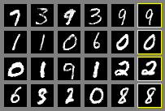

Ian J. Goodfellow · Jean Pouget-Abadie · Mehdi Mirza · Bing Xu · David Warde-Farley · Sherjil Ozair · Aaron Courville · Yoshua Bengio Université de Montréal · Advances in Neural Information Processing Systems 27 (NIPS 2014)
训练两个网络：生成器 G 把随机噪声变成假样本，判别器 D 判断样本是真是假。二者对抗提升，直到 D 分不出真假（准确率 50%）、G 生成的数据分布等于真实分布。全程只需反向传播，不需要 MCMC、不需要显式概率密度。
阅读提示：这篇论文数学部分（第 4 节）证明的是"非参数极限下的全局最优"，而实践里的 GAN 训练臭名昭著地不稳定。读的时候要把优美的理论结论与混乱的工程现实分开看——导读会解释为什么理论与现实之间隔着一整个"模式崩塌"的问题。
★
Abstract
摘要
本章导读 · READING NOTES
摘要把 GAN 的全貌浓缩在一段里：框架、理论保证、实现优势和实验。注意最后那句"不需要马尔可夫链或展开的近似推断网络"——这是它相对此前生成模型的最大卖点。
EN
We propose a new framework for estimating generative models via an adversarial process, in which we simultaneously train two models: a generative model G that captures the data distribution, and a discriminative model D that estimates the probability that a sample came from the training data rather than G.
译文
我们提出一种新的框架，通过对抗过程来估计生成模型。该框架同时训练两个模型：一个捕捉数据分布的生成模型 G，以及一个判别模型 D，用于估计某样本来自训练数据而非 G 的概率。
EN
The training procedure for G is to maximize the probability of D making a mistake. This framework corresponds to a minimax two-player game.
译文
G 的训练过程是最大化 D 犯错的概率。该框架对应一个极小极大的双人博弈。
EN
In the space of arbitrary functions G and D, a unique solution exists, with G recovering the training data distribution and D equal to 1/2 everywhere.
译文
在 G 和 D 为任意函数的空间中，存在唯一解：G 还原出训练数据的分布，而 D 处处等于 1/2。
EN
In the case where G and D are defined by multilayer perceptrons, the entire system can be trained with backpropagation. There is no need for any Markov chains or unrolled approximate inference networks during either training or generation of samples.
译文
当 G 和 D 由多层感知机定义时，整个系统可以用反向传播训练。无论在训练还是生成样本时，都不需要任何马尔可夫链或展开的近似推断网络。
EN
Experiments demonstrate the potential of the framework through qualitative and quantitative evaluation of the generated samples.
译文
实验通过对生成样本的定性与定量评估，展示了该框架的潜力。
解读 · "D 处处等于 1/2"是理解 GAN 的钥匙：判别器再也分不出真假（只能靠抛硬币），说明生成器已经完美复制了数据分布。这就是纳什均衡在生成模型里的样子。
The promise of deep learning is to discover rich, hierarchical models that represent probability distributions over the kinds of data encountered in artificial intelligence applications, such as natural images, audio waveforms containing speech, and symbols in natural language corpora.
译文
深度学习的承诺，是发现丰富的、层次化的模型，用以表示 AI 应用中遇到的各类数据的概率分布——如自然图像、含语音的音频波形、自然语言语料中的符号。
EN
So far, the most striking successes in deep learning have involved discriminative models, usually those that map a high-dimensional, rich sensory input to a class label. These striking successes have primarily been based on the backpropagation and dropout algorithms, using piecewise linear units which have a particularly well-behaved gradient.
Deep generative models have had less of an impact, due to the difficulty of approximating many intractable probabilistic computations that arise in maximum likelihood estimation and related strategies, and due to difficulty of leveraging the benefits of piecewise linear units in the generative context. We propose a new generative model estimation procedure that sidesteps these difficulties.
In the proposed adversarial nets framework, the generative model is pitted against an adversary: a discriminative model that learns to determine whether a sample is from the model distribution or the data distribution. The generative model can be thought of as analogous to a team of counterfeiters, trying to produce fake currency and use it without detection, while the discriminative model is analogous to the police, trying to detect the counterfeit currency. Competition in this game drives both teams to improve their methods until the counterfeits are indistinguishable from the genuine articles.
解读 · 造假者 vs 警察的比喻是 GAN 出圈的原因——它让一个抽象的数学框架变得直观。做笔记时记住这个对应关系：G = 造假者，D = 警察，真币 = 训练数据，假币 = G 的输出，均衡 = 警察只能瞎猜。
EN
This framework can yield specific training algorithms for many kinds of model and optimization algorithm. In this article, we explore the special case when the generative model generates samples by passing random noise through a multilayer perceptron, and the discriminative model is also a multilayer perceptron. We refer to this special case as adversarial nets. In this case, we can train both models using only the highly successful backpropagation and dropout algorithms and sample from the generative model using only forward propagation. No approximate inference or Markov chains are necessary.
这一节梳理 GAN 之前的生成模型困境，是理解"GAN 到底绕开了什么"的必读背景。核心线索：所有旧方法都被"配分函数算不出来"或"MCMC 太慢"卡住。
EN
An alternative to directed graphical models with latent variables are undirected graphical models with latent variables, such as restricted Boltzmann machines (RBMs), deep Boltzmann machines (DBMs) and their numerous variants. The interactions within such models are represented as the product of unnormalized potential functions, normalized by a global summation/integration over all states of the random variables.
This quantity (the partition function) and its gradient are intractable for all but the most trivial instances, although they can be estimated by Markov chain Monte Carlo (MCMC) methods. Mixing poses a significant problem for learning algorithms that rely on MCMC.
Deep belief networks (DBNs) are hybrid models containing a single undirected layer and several directed layers. While a fast approximate layer-wise training criterion exists, DBNs incur the computational difficulties associated with both undirected and directed models.
Alternative criteria that do not approximate or bound the log-likelihood have also been proposed, such as score matching and noise-contrastive estimation (NCE). Both of these require the learned probability density to be analytically specified up to a normalization constant. Note that in many interesting generative models with several layers of latent variables (such as DBNs and DBMs), it is not even possible to derive a tractable unnormalized probability density.
Some models such as denoising auto-encoders and contractive autoencoders have learning rules very similar to score matching applied to RBMs. In NCE, as in this work, a discriminative training criterion is employed to fit a generative model. However, rather than fitting a separate discriminative model, the generative model itself is used to discriminate generated data from samples a fixed noise distribution. Because NCE uses a fixed noise distribution, learning slows dramatically after the model has learned even an approximately correct distribution over a small subset of the observed variables.
译文
一些模型（如去噪自编码器和收缩自编码器）的学习规则，与应用于 RBM 的得分匹配非常相似。在 NCE 中，和本文一样，使用判别式训练准则来拟合生成模型。但 NCE 并非拟合一个单独的判别模型，而是用生成模型本身来区分生成数据与来自固定噪声分布的样本。由于 NCE 使用固定噪声分布，一旦模型在观测变量的一小部分上学会了近似正确的分布，学习就会急剧变慢。
解读 · NCE 与 GAN 的亲缘关系值得注意：都把"拟合生成模型"转化成"训练判别器"。区别在于 NCE 的"假样本"来自固定噪声（太容易被识破，模型学会一点后就不再进步），GAN 的假样本来自不断进化的 G（对手持续变强，形成军备竞赛）。这就是对抗的关键价值。
EN
Finally, some techniques do not involve defining a probability distribution explicitly, but rather train a generative machine to draw samples from the desired distribution. This approach has the advantage that such machines can be designed to be trained by back-propagation. Prominent recent work in this area includes the generative stochastic network (GSN) framework, which extends generalized denoising auto-encoders: both can be seen as defining a parameterized Markov chain, i.e., one learns the parameters of a machine that performs one step of a generative Markov chain.
Compared to GSNs, the adversarial nets framework does not require a Markov chain for sampling. Because adversarial nets do not require feedback loops during generation, they are better able to leverage piecewise linear units, which improve the performance of backpropagation but have problems with unbounded activation when used in a feedback loop. More recent examples of training a generative machine by back-propagating into it include recent work on auto-encoding variational Bayes and stochastic backpropagation.
全文最核心的一节：定义 G、D、目标函数和训练算法。务必把极小极大公式和 Algorithm 1 读懂——这是后面所有 GAN 变体的出发点。
EN
The adversarial modeling framework is most straightforward to apply when the models are both multilayer perceptrons. To learn the generator's distribution p_g over data x, we define a prior on input noise variables p_z(z), then represent a mapping to data space as G(z; θ_g), where G is a differentiable function represented by a multilayer perceptron with parameters θ_g. We also define a second multilayer perceptron D(x; θ_d) that outputs a single scalar. D(x) represents the probability that x came from the data rather than p_g.
译文
当两个模型都是多层感知机时，对抗建模框架最为直接适用。为学习生成器在数据 x 上的分布 p_g，我们先在输入噪声变量上定义先验 p_z(z)，再把到数据空间的映射表示为 G(z; θ_g)，其中 G 是由参数 θ_g 的多层感知机表示的可微函数。我们再定义第二个输出单个标量的多层感知机 D(x; θ_d)。D(x) 表示 x 来自数据而非 p_g 的概率。
EN
We train D to maximize the probability of assigning the correct label to both training examples and samples from G. We simultaneously train G to minimize log(1 − D(G(z))). In other words, D and G play the following two-player minimax game with value function V(G, D):
译文
我们训练 D，使其对训练样本和来自 G 的样本都尽可能正确地打标签；同时训练 G，使其最小化 log(1 − D(G(z)))。换句话说，D 和 G 进行如下带值函数 V(G, D) 的双人极小极大博弈：
In the next section, we present a theoretical analysis of adversarial nets, essentially showing that the training criterion allows one to recover the data generating distribution as G and D are given enough capacity, i.e., in the non-parametric limit. See Figure 1 for a less formal, more pedagogical explanation of the approach.
译文
下一节给出对抗网络的理论分析，本质上表明：当 G 和 D 有足够容量（即在非参数极限下），该训练准则能让人恢复出数据生成分布。图 1 给出了一个不那么正式、更具教学性的解释。
EN
In practice, we must implement the game using an iterative, numerical approach. Optimizing D to completion in the inner loop of training is computationally prohibitive, and on finite datasets would result in overfitting. Instead, we alternate between k steps of optimizing D and one step of optimizing G. This results in D being maintained near its optimal solution, so long as G changes slowly enough.
译文
实践中，我们必须用迭代的数值方法实现这个博弈。在训练内循环里把 D 优化到收敛，计算上代价高昂，且在有限数据集上会导致过拟合。于是我们改为交替进行：优化 D k 步，再优化 G 一步。只要 G 变化足够慢，就能让 D 保持在其最优解附近。
解读 · 训练的实际做法：不能每次都把 D 训到完美（太慢且过拟合），所以每轮只更新 D k 步（论文用 k=1）再更新 G 一步。这个"交替更新"是对抗训练的核心工程技巧，也是不稳定的来源之一——步调不对，一方会压倒另一方。
EN
In practice, equation 1 may not provide sufficient gradient for G to learn well. Early in learning, when G is poor, D can reject samples with high confidence because they are clearly different from the training data. In this case, log(1 − D(G(z))) saturates. Rather than training G to minimize log(1 − D(G(z))) we can train G to maximize log D(G(z)). This objective function results in the same fixed point of the dynamics of G and D but provides much stronger gradients early in learning.
译文
实践中，式 (1) 可能无法为 G 提供足够梯度使其学好。训练初期 G 很弱，D 能以高置信度拒绝其样本，因为那些样本明显不同于训练数据。此时 log(1 − D(G(z))) 会饱和。与其训练 G 最小化 log(1 − D(G(z)))，不如训练 G 最大化 log D(G(z))。这个目标函数带来相同的 G/D 动力学不动点，但在训练早期提供更强的梯度。
解读 · 非饱和技巧：早期 D 太强时，log(1−D(G(z))) 接近常数 0，梯度消失，G 学不动。改成最大化 log D(G(z))，早期梯度大得多。这是 GAN 训练中最重要的实用 trick 之一，后来的"最小二乘 GAN""WGAN"都在解决类似的梯度问题。
Figure 1. GANs trained by updating D (blue dashed) to discriminate data (black dotted) from generator distribution (green solid), while G flows toward regions classified as data. At convergence p_g = p_data and D = 1/2.图 1 · 通过更新判别器 D（蓝色虚线）区分数据分布（黑色点线）与生成分布（绿色实线），同时让 G 向更可能被判为数据的区域流动来训练 GAN。收敛时 p_g = p_data，D = 1/2。
读图 · 这是理解 GAN 动态过程最著名的一张图：(a) 接近收敛的初始状态 → (b) D 被训练到最优 → (c) G 的梯度把它拉向真实分布 → (d) 多步后两者重合，D 变成常数 1/2。逆着看，你就能理解训练为什么会震荡。
4
4. Theoretical Results
4. 理论结果
本章导读 · READING NOTES
这一节证明"GAN 的最优解就是生成正确分布"，是全篇数学含量最高的部分。核心链条：先求给定 G 时的最优 D，再证明此时目标函数等价于 JS 散度，从而最小值当且仅当 p_g = p_data。
EN
The generator G implicitly defines a probability distribution p_g as the distribution of the samples G(z) obtained when z ∼ p_z. Therefore, we would like Algorithm 1 to converge to a good estimator of p_data, if given enough capacity and training time. The results of this section are done in a non-parametric setting, e.g. we represent a model with infinite capacity by studying convergence in the space of probability density functions. We will show that this minimax game has a global optimum for p_g = p_data, and then that Algorithm 1 optimizes Eq 1.
4.1 Global Optimality of p_g = p_data 4.1 p_g = p_data 的全局最优性
EN
We first consider the optimal discriminator D for any given generator G. Proposition 1: For G fixed, the optimal discriminator is D*_G(x) = p_data(x) / (p_data(x) + p_g(x)).
Proof: The training criterion for the discriminator D, given any generator G, is to maximize the quantity V(G, D). For any (a, b) in R² \ {(0,0)}, the function y → a log(y) + b log(1 − y) achieves its maximum in [0,1] at a/(a+b). The discriminator does not need to be defined outside of Supp(p_data) ∪ Supp(p_g), concluding the proof.
译文
证明：给定任意 G 时，判别器 D 的训练准则是最大化 V(G, D)。对任意 (a,b) ∈ R² \ {(0,0)}，函数 y → a log(y) + b log(1−y) 在 [0,1] 上的最大值取在 a/(a+b) 处。判别器无需在 Supp(p_data) ∪ Supp(p_g) 之外定义，证毕。
EN
Note that the training objective for D can be interpreted as maximizing the log-likelihood for estimating the conditional probability P(Y = y | x), where Y indicates whether x comes from p_data (with y = 1) or from p_g (with y = 0).
译文
注意，D 的训练目标可解释为：最大化用于估计条件概率 P(Y = y | x) 的对数似然，其中 Y 表示 x 来自 p_data（y=1）还是 p_g（y=0）。
公式解读 · 把最优 D 代回目标函数后，C(G) 变成常数 −log4 加上两个 KL 散度，它们合起来正是 Jensen–Shannon 散度（JSD）。这是全篇最漂亮的结论：训练 GAN 就是在最小化真实分布与生成分布之间的 JS 散度。
EN
Theorem 1: The global minimum of the virtual training criterion C(G) is achieved if and only if p_g = p_data. At that point, C(G) achieves the value −log 4. Since the Jensen–Shannon divergence between two distributions is always non-negative and zero only when they are equal, we have shown that C* = −log(4) is the global minimum of C(G) and that the only solution is p_g = p_data, i.e., the generative model perfectly replicating the data generating process.
解读 · 理解 JS 散度的意义：它是对称的 KL 变体，取值 0 到 log2，衡量两个分布的重叠程度。GAN 把它作为隐式优化目标——注意是隐式：G 从未直接看到 p_data，只知道 D 传回的梯度。这个"通过裁判反馈逼近目标"的机制是 GAN 的精髓。
4.2 Convergence of Algorithm 1 4.2 算法 1 的收敛性
EN
Proposition 2: If G and D have enough capacity, and at each step of Algorithm 1, the discriminator is allowed to reach its optimum given G, and p_g is updated so as to improve the criterion, then p_g converges to p_data. Consider V(G, D) = U(p_g, D) as a function of p_g. Note that U(p_g, D) is convex in p_g. sup_D U(p_g, D) is convex in p_g with a unique global optimum, therefore with sufficiently small updates of p_g, p_g converges to p_x.
译文
命题 2：若 G 和 D 有足够容量，且算法 1 每一步都允许判别器在给定 G 下达到最优，并更新 p_g 以改进准则，则 p_g 收敛到 p_data。把 V(G,D) = U(p_g,D) 视为 p_g 的函数，注意 U 对 p_g 是凸的；sup_D U(p_g,D) 对 p_g 凸且有唯一全局最优，因此只要 p_g 更新足够小，p_g 就收敛到 p_x。
EN
In practice, adversarial nets represent a limited family of p_g distributions via the function G(z; θ_g), and we optimize θ_g rather than p_g itself. Using a multilayer perceptron to define G introduces multiple critical points in parameter space. However, the excellent performance of multilayer perceptrons in practice suggests that they are a reasonable model to use despite their lack of theoretical guarantees.
解读 · 注意作者的诚实：理论证明的是"分布空间里的理想收敛"，但实践里我们优化的是神经网络参数 θ_g，存在多个局部极值，理论保证不直接适用。这种坦诚在论文里很珍贵——也预告了后来 GAN 训练的诸多麻烦。
5
5. Experiments
5. 实验
本章导读 · READING NOTES
GAN 的早期实验并不惊艳——图像模糊、评估困难。但作者展示了框架的可行性，并诚实地指出 Parzen 窗似然估计的高方差问题。
EN
We trained adversarial nets on a range of datasets including MNIST, the Toronto Face Database (TFD), and CIFAR-10. The generator nets used a mixture of rectifier linear activations and sigmoid activations, while the discriminator net used maxout activations. Dropout was applied in training the discriminator net. While our theoretical framework permits the use of dropout and other noise at intermediate layers of the generator, we used noise as the input to only the bottommost layer of the generator network.
We estimate the probability of the test set data under p_g by fitting a Gaussian Parzen window to the samples generated with G and reporting the log-likelihood under this distribution. This method of estimating the likelihood has somewhat high variance and does not perform well in high dimensional spaces but it is the best method available to our knowledge. Advances in generative models that can sample but not estimate likelihood directly motivate further research into how to evaluate such models.
译文
我们通过对 G 生成的样本拟合高斯 Parzen 窗，并报告该分布下的对数似然，来估计测试数据在 p_g 下的概率。这种似然估计方法方差较高，在高维空间中表现不佳，但据我们所知这是现有最好的方法。生成模型能采样却不能直接估计似然的现状，促使我们进一步研究如何评估这类模型。
表 1 · Table 1 基于 Parzen 窗的对数似然估计
MNIST 报告测试样本的平均对数似然及跨样本标准误；TFD 跨数据折计算标准误。
模型 / Model
MNIST
TFD
DBN [3]
138 ± 2
1909 ± 66
Stacked CAE [3]
121 ± 1.6
2110 ± 50
Deep GSN [6]
214 ± 1.1
1890 ± 29
Adversarial nets
225 ± 2
2057 ± 26

Figure 2 (a-d). Samples from the generator: MNIST, TFD, CIFAR-10 (fully connected), CIFAR-10 (convolutional discriminator / deconvolutional generator). Rightmost column shows nearest training example to demonstrate no memorization.图 2 (a–d) · 生成器样本：MNIST、TFD、CIFAR-10（全连接）、CIFAR-10（卷积判别器 / 反卷积生成器）。最右列显示最近的训练样本，以证明模型没有死记硬背。
读图 · "最右列显示最近邻训练样本"是一个用心设计：证明生成的图不是把训练集背下来再吐出来。早期的 GAN 图像模糊，但"样本是真正从模型分布独立采样、不依赖 MCMC 混合"这一点，本身就是框架优势。
6
6. Advantages and Disadvantages
6. 优点与缺点
本章导读 · READING NOTES
这节是给读者的"冷静剂"：作者亲自列出 GAN 的两大缺点——没有显式 p_g(x)，以及 G 和 D 必须同步训练（否则模式崩塌）。理解这段，就能理解后来 GAN 研究为何大多在解决稳定性问题。
EN
This new framework comes with advantages and disadvantages relative to previous modeling frameworks. The disadvantages are primarily that there is no explicit representation of p_g(x), and that D must be synchronized well with G during training (in particular, G must not be trained too much without updating D, in order to avoid "the Helvetica scenario" in which G collapses too many values of z to the same value of x to have enough diversity to model p_data).
译文
相对此前框架，这个新框架有优点也有缺点。缺点主要是：没有 p_g(x) 的显式表示；训练时 D 必须与 G 良好同步。特别是，不能在 D 不更新的情况下过度训练 G，以避免"Helvetica 场景"——即 G 把太多 z 值坍缩到同一个 x 值，从而没有足够多样性去建模 p_data。
The advantages are that Markov chains are never needed, only backprop is used to obtain gradients, no inference is needed during learning, and a wide variety of functions can be incorporated into the model.
译文
优点在于：从不需要马尔可夫链；只用反向传播获得梯度；学习时不需要推断；各种函数都可以纳入模型。
EN
The aforementioned advantages are primarily computational. Adversarial models may also gain some statistical advantage from the generator network not being updated directly with data examples, but only with gradients flowing through the discriminator. This means that components of the input are not copied directly into the generator's parameters. Another advantage is that they can represent very sharp, even degenerate distributions, while methods based on Markov chains require that the distribution be somewhat blurry in order for the chains to be able to mix between modes.
This framework admits many straightforward extensions: 1) A conditional generative model p(x | c) can be obtained by adding c as input to both G and D. 2) Learned approximate inference can be performed by training an auxiliary network to predict z given x. This is similar to the inference net trained by the wake-sleep algorithm but with the advantage that the inference net may be trained for a fixed generator net after the generator net has finished training.
译文
该框架有许多直接的扩展：1）把 c 作为 G 和 D 的输入，即可得到条件生成模型 p(x|c)。2）通过训练一个辅助网络在给定 x 时预测 z，可实现学习到的近似推断。这类似于 wake-sleep 算法训练的推断网络，但优点是推断网络可在生成器训练完成后、针对固定的生成器进行训练。
EN
3) One can approximately model all conditionals p(x_S | x_¬S) where S is a subset of the indices of x by training a family of conditional models that share parameters. 4) Semi-supervised learning: features from the discriminator or inference net could improve performance of classifiers when limited labeled data is available. 5) Efficiency improvements: training could be accelerated greatly by devising better methods for coordinating G and D or determining better distributions to sample z from during training.
译文
3）通过训练一族共享参数的条件模型，可以近似建模所有条件分布 p(x_S | x_¬S)，其中 S 是 x 索引的子集。4）半监督学习：当标注数据有限时，判别器或推断网络的特征可以提升分类器性能。5）效率改进：通过设计更好的 G/D 协调方法，或确定训练时采样 z 的更好分布，可大幅加速训练。
EN
This paper has demonstrated the viability of the adversarial modeling framework, suggesting that these research directions could prove useful. Acknowledgments: we thank Patrice Marcotte, Olivier Delalleau, Kyunghyun Cho, Guillaume Alain, Jason Yosinski, Yann Dauphin, the developers of Pylearn2 and Theano, and CIFAR for funding. Ian Goodfellow is supported by the 2013 Google Fellowship in Deep Learning. Finally, we thank Les Trois Brasseurs for stimulating our creativity.
译文
本文证明了对抗建模框架的可行性，表明这些研究方向可能是有用的。致谢：感谢 Patrice Marcotte、Olivier Delalleau、Kyunghyun Cho、Guillaume Alain、Jason Yosinski、Yann Dauphin，Pylearn2 与 Theano 的开发者，以及 CIFAR 的资助。Ian Goodfellow 获 2013 年 Google 深度学习奖学金支持。最后，感谢 Les Trois Brasseurs（一家啤酒馆）激发了我们的创造力。
解读 · 最后那句致谢很有 Goodfellow 的风格：据说 GAN 的核心想法正是在酒吧和朋友争论时冒出来的。学术史上一个改变领域的点子，环境可能只是一杯啤酒。
Part 3 · 总结对照导读 + 我的理解
Summary, comparative reading, and what actually matters in 2026